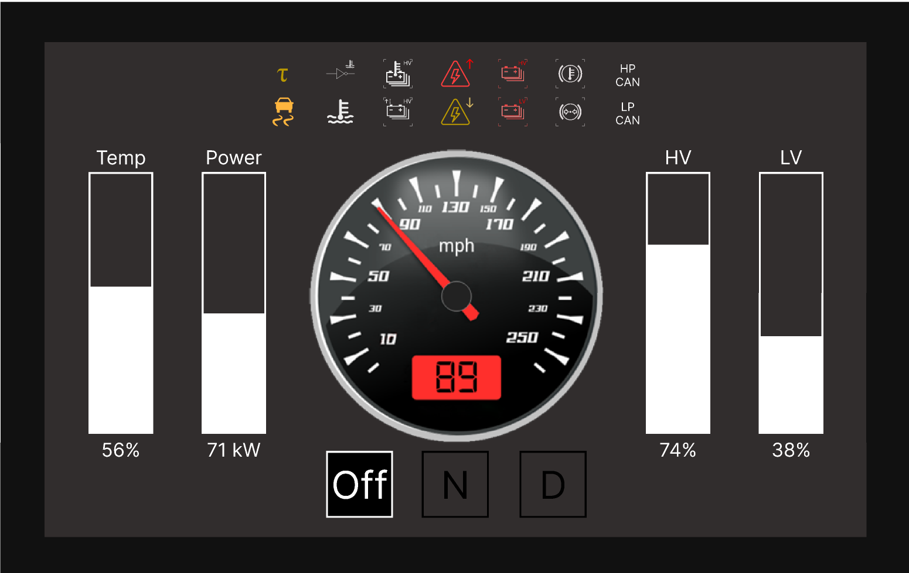

Racecar Dashboard
Developed the UI/UX design for the dashboard of this year's car for Northwestern Formula Racing
Role: UI/UX designer (August 2022-Current)
Skills: Figma, Low-fidelity prototyping, High-fidelity prototpying, Design Reviews

Process
- I started by conducting a few user and expert interviews to collect information
- Afterwards, I created paper prototypes of my initial designs, and updated them as I received more feedback
- Next, I mocked up my best paper prototype on Figma
- Finally, I conducted a preliminary Design Review to receive comprehensive feedback to finalize my design
- I am currently in the process of finalizing my design
Features
- There are 4 main components of the dashboard
- There are the 14 safety alerts at the top
- There are 4 bars to the sides representing various states of power and battery levels
- In the middle is the speedometer
- Finally, At the bottom are the tractive states, indicating whether the car is being driven
- Looking to improve a few things--the main one being to transition from an analog design to an electric one
Contact Information
Email: justinjia2023@u.northwestern.edu